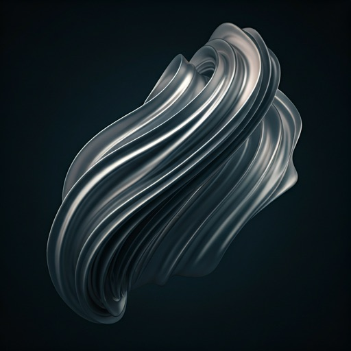
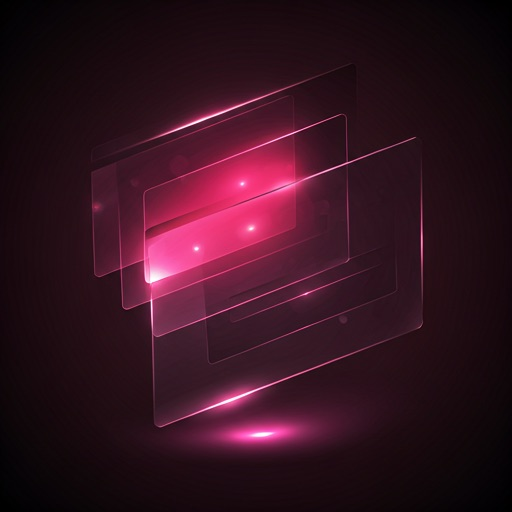

Clarity through
Translucence.
Experience the depth of multi-layered interfaces where every container breathes. Our curatorial approach to Glassmorphism creates a modern, invisible foundation for your content.
Multi-Layer Depth
Our layout uses Tonal Layering rather than heavy shadows. Each "exhibit" card sits on a unique Z-axis, creating a museum-like experience for your visual assets.

Nebula Glass
Focusing on high-contrast backgrounds with 40px blur effects and cinematic lighting profiles.

Layered Prism
Refractive surfaces that bend light and color from below, creating interactive color shifts.
Ghost Shell
Invisible UI principles where content remains the hero, using subtle boundary definitions.
Build the
Invisible.
Ready to transform your interface into a high-fidelity museum of digital experiences? Download our curated glass component library today.